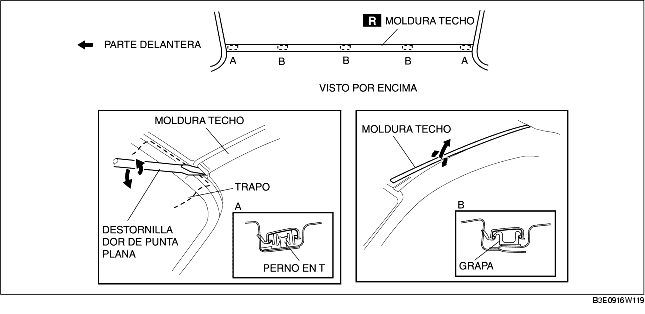

1. Quitar la moldura del techo del perno T de la sección A, utilizando un destornillador de punta plana o herramienta equivalente.
2. Mientras se levanta la moldura del techo, quitarle las grapas de las secciones B y extraer la moldura del techo.
